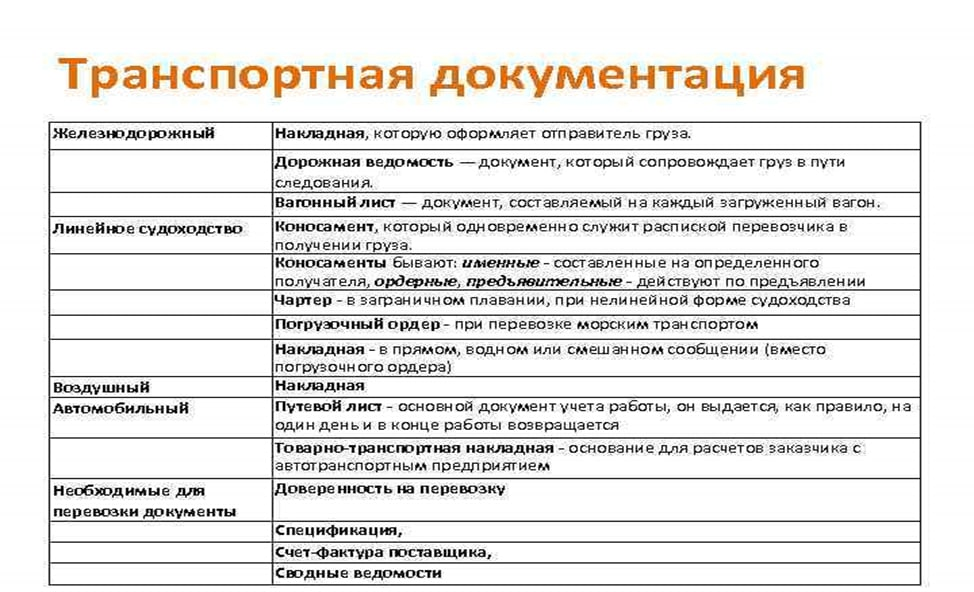

Основная информация о электронных накладных в логистике
Электронная транспортная накладная (ЭТрН) — аналог документа
на бумажном носителе. Она юридически значима и выполняет ту же
функцию — подтверждает расходы на доставку груза. Форму ЭТрН
можно найти в приложении № 4 постановления Правительства № 2200
от 21.12.2020 и
на нашем сайте

Каждая электронная транспортная накладная состоит из двух частей
и включает четыре обязательных файла обмена. В разных источниках
их именуют титулами, а также разделами:
- Погрузка. Состоит из двух разделов. В первом находится информация
об участниках доставки, условиях транспортировки и договора,
о водителе, перевозимом грузе и сопровождающих его документах. Эту
часть подписывает грузоотправитель. Второй раздел должен подписать
перевозчик.
-
Выгрузка. Аналогично первому файлу содержит информацию от двух
участников доставки. Грузополучатель подписывает раздел,
содержащий данные о приеме товара от перевозчика и состоянии груза.
Вторую часть, зеркально отражающую выполнение доставки, заполняет
перевозчик, подписывая данные о сдаче груза в руки получателя.
Все документы визируются с помощью электронной подписи.
История разработки и дальнейшие планы на электронные накладные
В октябре 2020 года Минтранс запустил эксперимент по переводу
бумажных перевозочных документов в электронный формат. Он
коснулся и транспортных накладных. Для работы с электронными
документами был создан прототип единой государственной
информационной системы — ФГУП «ЗащитаИнфоТранс». Компании
взаимодействовали между собой через системы операторов ЭДО. Были
разработаны правила обмена и экспериментальные формы
электронных документов — транспортной накладной и путевого листа.
Бизнес начал подключаться к системе с 1 января 2022 года
В Минтрансе считают, что за счёт перехода на бездокументарный
оборот к 2030 году Россия сможет в 6 раз увеличить скорость
перемещения грузов и передачи информации о нём.
Также планируется, что переход на электронные документы сократит
количество выездных проверок контролирующих органов и нагрузку на
бизнес. Надзорные ведомства увидят данные о перевозке после того,
как компания разместит накладную в ГИС ЭПД, а водитель подтвердит
приёмку груза.
Замминистра(экс) Минтранса Алексей Семёнов еще в начале
эксперимента отметил, что после реализации проекта данные
занесённых в реестр транспортных средств будут автоматически
считываться камерами фото- и видеофиксации и передаваться в
систему. Благодаря этому не придётся останавливать водителей в пути
для проверки документов. Время доставки грузов значительно
ускорится.
На главную